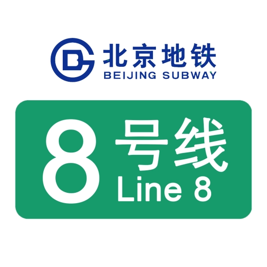
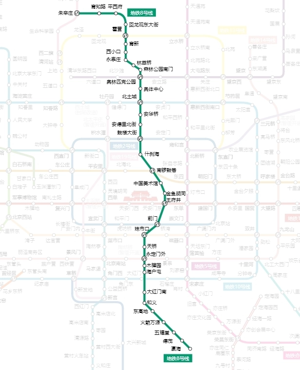
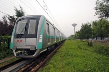

线路走向

车辆设施
SFM12\SFM42

北京地铁8号线一期工程没有车辆基地，采用北京地铁10号线的DKZ15型列车，配置为4列。
北京地铁8号线二期新列车为中车青岛四方机车车辆股份有限公司制造的SFM12和SFM42型列车，该车辆外部被不锈钢“本色”覆盖，为B型车6节编组，初期配属33列198辆车，昌八联络线开通后增加至39列234辆车。北京地铁8号线三期与北京地铁8号线四期开通后加至105列630辆车，每列可以载客1424人，最多可达到1600人。车厢里的座椅为统一的绿色，黄色的为老幼座椅。不锈钢材质增加了车门硬度，并采用第三轨上部接触受电。同时，客室车窗单独设有2个可打开的活动窗，位于每个车厢的前端和后端的斜对角。另外，车头左边还设有逃生门，遇突发乘客可逃生。